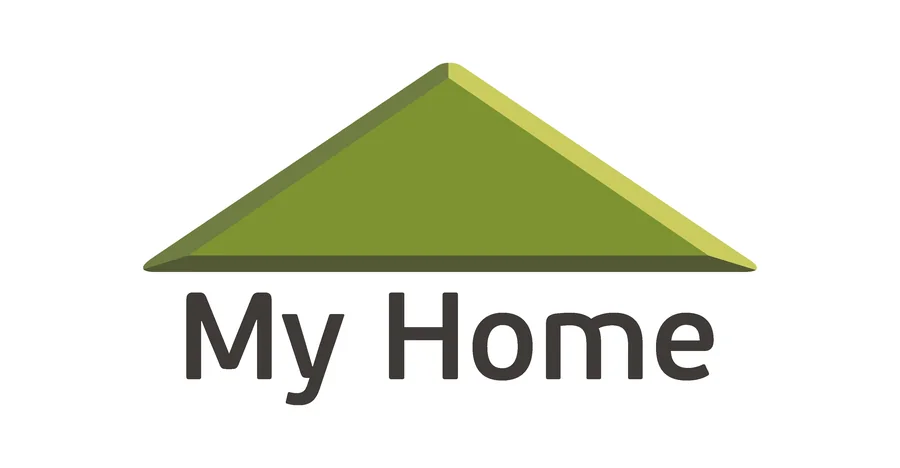

Grupo My Home
Asistente de Gerencia · My Home y ALCAMO
- Apoyo a gerencia en distintas áreas, con mayor participación en Desarrollo de Proyectos.
- Elaboración de estudios de mercado y perfiles económicos para evaluar terrenos.
- Análisis de información técnica, comercial y financiera para apoyar decisiones de adquisición.
- Automatización de estudios de mercado mediante inteligencia artificial.
- Desarrollo en Excel y macros de una herramienta para perfiles económicos preliminares.
- Coordinación y soporte en tareas estratégicas asignadas por gerencia.